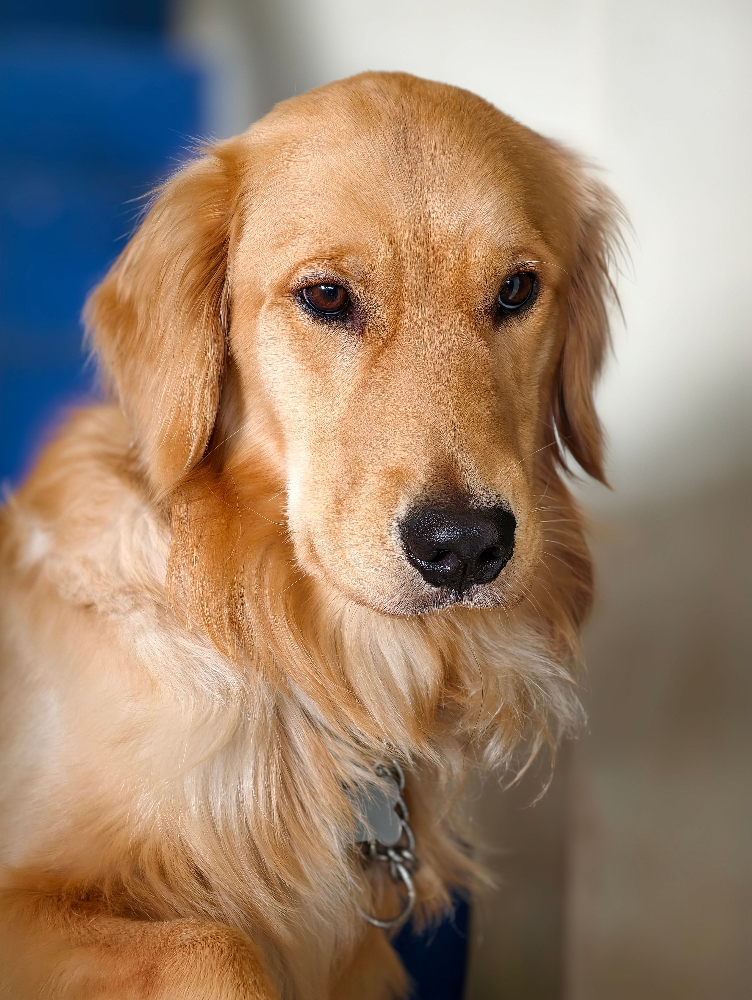
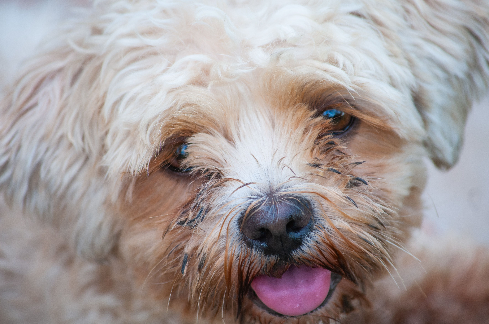
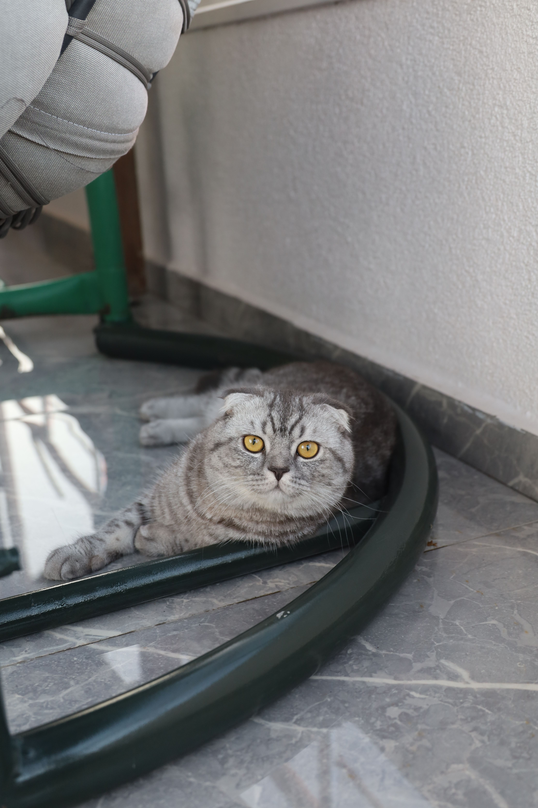
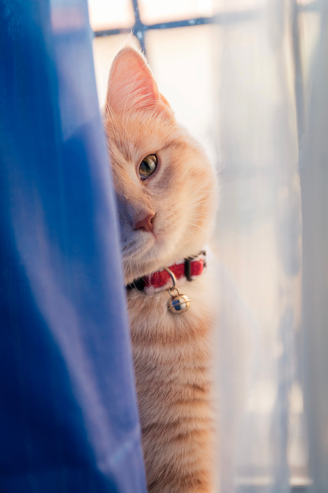

Resgate, cuidado e adoção responsável
Conheça alguns dos animais que estão esperando por uma nova família.
Todos os animais recebem cuidados, alimentação e acompanhamento antes da adoção.

Espécie: Cachorro
Idade: 2 anos
Porte: Médio
Thor é um cachorro brincalhão, carinhoso e gosta bastante de companhia.

Espécie: Cachorro
Idade: 3 anos
Porte: Pequeno
Mel é tranquila, dócil e gosta de ficar perto das pessoas.

Espécie: Gato
Idade: 1 ano
Porte: Pequeno
Luna é uma gata carinhosa, curiosa e bastante tranquila.

Espécie: Gato
Idade: 2 anos
Porte: Pequeno
Simba é brincalhão, curioso e se adapta facilmente às pessoas.
Se você se interessou por algum dos animais, acesse nossa página de Contato e envie seus dados.
Lar Amigo - Todos os direitos reservados
Kelvyn da Silva Costa - Matrícula: 202620396
Curso: Análise e Desenvolvimento de Sistemas